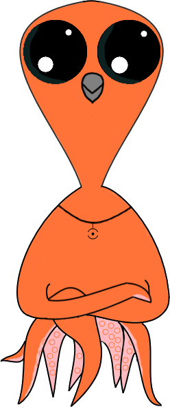

<mat-toolbar color="primary" role="banner">
    <a [routerLink]="['/']">
        
    </a>
    <span [routerLink]="['/']" class="toolbar-button">Kraken's Cove</span>
    <div class="tab"></div>
    <span [routerLink]="['/items']" class="toolbar-button">Items</span>
    <div class="tab"></div>
    <span [routerLink]="['/spread']" class="toolbar-button" *ngIf="checkLoggedIn()">Flipping</span>
    <div class="tab"></div>
    <span [routerLink]="['/trades']" class="toolbar-button" *ngIf="checkLoggedIn()">Trades</span>
    <div class="tab"></div>
    <span [routerLink]="['/history']" class="toolbar-button" *ngIf="checkLoggedIn()">History</span>
    <div class="tab"></div>
    <span [routerLink]="['/position']" class="toolbar-button" *ngIf="checkLoggedIn()">Positions</span>
    <div class="spacer"></div>
    <span [routerLink]="['/twitter']" class="toolbar-button">Twitter</span>
    <div class="tab"></div>
    <span [routerLink]="['/news']" class="toolbar-button">News</span>
    <div class="tab"></div>
    <span [routerLink]="['/contact']" class="toolbar-button">Contact</span>
    <button mat-icon-button [matMenuTriggerFor]="menu">
        <mat-icon>more_vert</mat-icon>
    </button>
    <mat-menu #menu="matMenu">
        <button mat-menu-item *ngIf="!checkLoggedIn()" routerLink="/login">Login</button>
        <button mat-menu-item *ngIf="checkLoggedIn()" routerLink="/account">My Account</button>
        <button mat-menu-item *ngIf="checkLoggedIn()" (click)="logout()">Logout</button>
    </mat-menu>
</mat-toolbar>